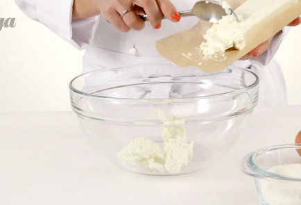
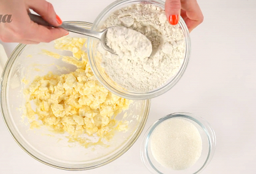
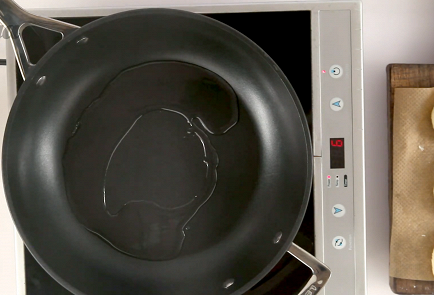
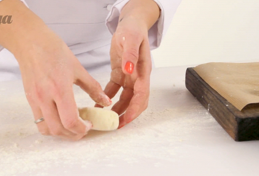
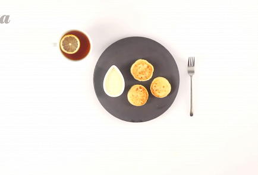

Сырники из творога
ИНГРЕДИЕНТЫ(на 2 порции)
- Яйцо куриное-2 штуки
- Творог-500 г
- Сахар-2 столовые ложки
- Подсолнечное масло-5 столовых ложек
- Пшеничная мука-6 столовых ложек
.jpg)
.jpg)
.jpg)
Социальные сети:


ИНСТРУКЦИЯ ПРИГОТОВЛЕНИЯ
1. Положите весь творог в кастрюльку и разомните его вилкой так, чтобы в нем не осталось крупных комков. Разбейте в него яйца, всыпьте сахар и тщательно все перемешайте. Лучше не использовать слишком сухой или слишком влажный творог, иначе сырники будут разваливаться в процессе приготовления.

2. Всыпьте в творог 5 столовых ложек (с горкой) муки и тщательно перемешайте. Можно добавить немного больше муки, сырники получатся тогда более плотными. Или муки можно добавить чуть меньше, и тогда сырники будут нежнее. В итоге у вас должна получиться однородная масса, из которой можно будет лепить сырники.

3. Поставьте сковороду на средний огонь и налейте в нее подсолнечное масло.

4. Насыпьте на тарелку немного муки. Слепите несколько небольших шариков из получившейся творожной массы и положите их на тарелку. Лучше лепить разом 4–5 шариков — столько, сколько поместится одновременно на сковороду. Затем по очереди обкатывайте творожные шарики в муке, плющите их в небольшие лепешки (они не должны быть слишком тонкие) и выкладывайте на сковороду.

5. Обжаривайте сырники 1–2 минуты до появления золотистой корочки. Затем переверните их на другую сторону и также обжарьте до золотистого состояния.
6. Повторяйте, пока творог не закончится.
